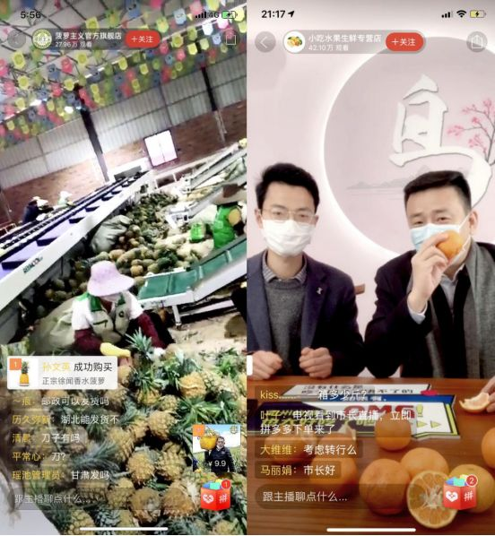
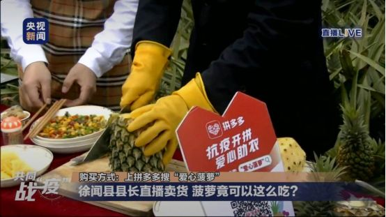

专访薇娅：疫情下，人性至上
原文链接 备份链接 文/雷成林 编辑/大风 突然爆发的疫情几乎让所有的线下门店停摆。在实体业溃败之后，电商护住了城市的血脉，快递员、外卖小哥、线上买菜维持着城市的运转。 在农村，疫情导致各地封村封路，所有的线下交易暂停，农户的果蔬被滞留在 …


文/西湖君
编辑/大风
三台快递打单器在不停地吐出新单据。十几分钟的时间里，来自全国的订单疯狂地涌进后台，地上已经堆满了好几层快递单据。站在打单器旁边的，是浙江衢州市市长汤飞帆。而直播镜头的另一端，是53万拼多多用户。
成为网红的不仅仅有汤飞帆。随着疫情的进行，滞销的农货产品也让农民的生活产生波动。为此，2月10日，拼多多正式上线“抗疫农货”专区，覆盖全国近400个农产区包括230多个国家级贫困县。
而跟着浙江衢州椪柑、广东徐闻菠萝、广西荔浦砂糖橘还有海南保亭百香果一起进入5亿消费者视野的，还有广东徐闻县县长吴康秀、重庆开州区区长蒋牧宸等人。各地方官员，亲自带头，走进直播间为自家产品“吆喝”。
一手抓防控，一手卖农货。滞销的农产品，也催生了2020年第一批“网红”的诞生。

特别的网红
“自古以来，衢州就盛产柑橘，椪柑是其中的代表。”镜头的另一侧，是48岁的汤飞帆，手拿着半个被剥开的椪柑。
在此前，作为浙江衢州的特色农产品。椪柑不仅常年销往北京、上海等一线城市，甚至在加拿大、俄罗斯都可得见。
而汤飞帆的主播试水，显然效果不错。在一天不到的时间里，2万件订单、超过21万斤椪柑，被源源不绝地销往各地。
在转型“主播”这条路上，同样取得不错成绩的，还有广东徐闻县县长吴康秀。但不同的是，他直接化身成了“吃货主播”。

广东徐闻县菠萝在拼多多直播卖货（左图）
订单在疯狂地涌入后台，两个小时内，菠萝售罄，新的货立马上架。直播结束后吴康秀瞄了一眼后台的数据：4.6万单。
实际上，在2月18号到19号两天的时间里，更多的产品纷纷走进拼多多“抗疫助农”的直播间。脐橙、苹果、草莓等农产品，也在重庆开州区区长蒋牧宸、广西象州县委副书记韦涛带货下，打破了传统的线下渠道，乘着电商直播这股风飞出农村。
拼多多的后台数据显示，短短两天时间里，透过直播带货的方式，各地特色农产品日销量达到了100万斤。与之相对的，是每场直播的观看人数均不低于十万。
电商直播这场火，给疫情下的偏远山区，带来了一丝火种。

两手抓
不可否认的是，此次疫情对各个地方政府，都是一场不小的考验。一方面，他们需要管控疫情预防工作；另一方面，他们还要解决农产品的滞销问题。
早在2月21号，山东寿光集团就与拼多多进行了签约，助推寿光的蔬菜入驻拼多多集团并开设旗舰店。
在寿光市政府的组织协调下，拼多多将负责提供技术研发、品牌打造、市场营销等新电商技能培训，通过改造升级当地的农产品供应链，共建蔬菜数字化上行机制。
除了对农产品的数字化改造升级，更当下的需求，也得到了解决。

直播预热图
春节以来，城市餐厅、菜场在内的渠道，进一步被收缩，农产品出现大量滞销。拼多多新农业农村研究院副院长狄拉克表示，尽管“抗疫助农”已经覆盖全国近400个农产区，但依旧有不少滞销的农产品急需解决。
在这样的情况下。5位官员亲自上阵，在拼多多的直播间，为自己的产品“卖起了吆喝”。
早在2月19日下午5点，广东徐闻县县长吴康秀率先现身拼多多直播间，晚上9点，衢州市市长汤飞帆也出现在镜头前，两人均展现了惊人的带货能力。拼多多的数据显示，在当天的两场直播中，共产生6.6万张订单（近7万），46万斤滞销的水果被售空。
而在未来，还将有更多政府相关部门和领导，将在拼多多直播卖货。

电商直播新模式
几年来，凭借独特的商业模式，拼多多已经成长为国内第二大、如今已有5.3亿用户在拼的电商巨头。
而地方官员成为主播，看起来很“性感”。但实际上，正是拼多多在传统电商直播的老路中，走出了一条以货为核心，农户和政府领导一起出镜的模式。
长期以来，农产品滞销是一个“老大难”的问题。受制于传统线下渠道，每到收获季，滞销、难销的新闻，都不绝于耳。2020年中央一号文件更是提出，扩大电子商务进农村覆盖面，加强村级电商服务站点建设，推动农产品进城。
而作为农产品起家的新电商平台，拼多多借助“拼团”的新模式，建立起了“天网”“地网”的系统性农产品供需匹配机制。2019年平台农产品成交额达到1364亿元人民币，成为国内最大的农产品平台。
值得一提的是，此次各个地方官员展现惊人带货能力的同时，也验证了拼多多以货为核心，农户和政府领导共出镜模式的成功。
一个最明显的例子是，在直播间，官员对农产品的优势信手拈来。
“衢州是‘中国椪柑之乡’，元旦至春节前后，是最佳食用期。由于汁多味浓、肉质脆嫩，椪柑的价格比当地其他柑桔品种高出40%~60%”，在直播间里，衢州市市长汤飞帆如此介绍道。
甚至连食谱的科普都如数家珍。
“除了直接吃，还可以做菜——菠萝咕咾肉、菠萝鸡片、菠萝饭、菠萝酸奶冰糕、凤梨酥，甚至还包括了网络流行吃法‘蘸酱油”。变身“吃货主播”的广东徐闻县县长吴康秀，在直播间大谈特谈特色菠萝的做法。
这也引得观众纷纷下单。截至2月23日，通过拼多多“抗疫助农”专区销售的滞销农产品已经超过130万单，初级农产品销售了2000多万斤。
崛起于下沉市场的拼多多，如今正在以新的方式反哺这片市场。

燃眉之急
事实上，随着疫情的延续，首当其冲遭遇影响的就是农户。
作为海南省澄迈县的一名瓜农，王林芬第一次发现，海南桥头地瓜居然滞销了。“以往春节期间每天可以卖200吨，今年最好的一天，只卖出300多公斤”。而追根溯源，是批发市场在疫情之后纷纷关停。传统的流通环节中最重要的一环，断了。
而看着堆着满地的地瓜，王林芬第一次睡不着觉。
同样睡不着觉的，还有云南的王耀忠。几年前大学毕业后，他和朋友创建了一支12人的电商创业团队，几番寻觅后，建水紫皮洋葱也成了他们的主营产品。但受疫情影响，原本该在春节进入畅销的洋葱也惨遭重创。

央视新闻联合拼多多全程参与直播
“批发市场不开市，收购商进不来。再卖不出去，就只能烂在地里，烂在仓库里”，王耀忠回忆道，这种情况比去年3月番茄因滞销腐烂在田间，有过之而无不及。而根据红河州商业局副局长蔡云飞的估计，受损农户过百户。
而随着拼多多上线“抗疫开拼，爱心助农”专区，燃眉之急很快得到了解决。
在第一时间联系了拼多多之后，王林芬的地瓜在10号当天就卖了2000多单。“到了12号，已经卖掉了8.6吨，第一批下单的地瓜已打包装箱完”，王林芬说。
而在店铺做了两小时直播后，王耀忠就卖出了一万斤洋葱。“到2月12号，卖掉了22.2吨紫皮洋葱，仓库终于又忙碌起来了。”
事实上，不论是拼多多的抗疫助农举措，还是官员的轮番上阵，都实实在在帮农民解决了燃眉之急。
除此之外，在疫情期间，拼多多还针对商户推出了10亿补贴、多重减负诸多措施，为滞销的农产品，打开了全新的销路。
作为国内领跑的电商平台，拼多多用直播电商的新模式，再次反哺下沉市场，为其构建了五环外电商市场的血液和神经网络，更承担了一个大企业的社会责任。


原文链接 备份链接 文/雷成林 编辑/大风 突然爆发的疫情几乎让所有的线下门店停摆。在实体业溃败之后，电商护住了城市的血脉，快递员、外卖小哥、线上买菜维持着城市的运转。 在农村，疫情导致各地封村封路，所有的线下交易暂停，农户的果蔬被滞留在 …
原文链接 备份链接 在淘宝直播上，有一万个隐藏直播间，每天都在发生着一些真实的人间故事。这一次，疫情来袭，这些直播间让全国网友在这里观看到最真实，最有用的抗疫生活。 文*｜*****许言 编辑***｜*******金石 1 成冬的司机生 …
原文链接 备份链接 新冠肺炎疫情下，重疫区湖北面临较为严重的医疗和生活物资短缺现象，口罩、防护服、护目镜、新鲜瓜果蔬菜都需要外界支援，多数企业伸出援手帮助疫区渡过难关。然而，在形势危急的当下，如何迅速调取物资并送往一线投入使用成为关键。 …
原文链接 备份链接 《创新经济战疫指南》，是燃财经在新型肺炎疫情期间推出的特别栏目，关注创新经济企业遇到的新难题、商讨应该采取的新对策，希望能够帮助中小企业一起战胜挑战、把握机会。本文是第3期。查看前2篇请点击《哪些行业正在逆势爆发？》《 …
原文链接 备份链接 《创新经济战疫计划》，是燃财经在新型肺炎疫情期间推出的特别栏目，关注创新经济企业遇到的新难题、商讨应该采取的新对策，希望能够帮助中小企业一起战胜挑战、把握机会。 作者 | 唐亚华 编辑 | 魏佳 疫情之下，大多数人足不 …